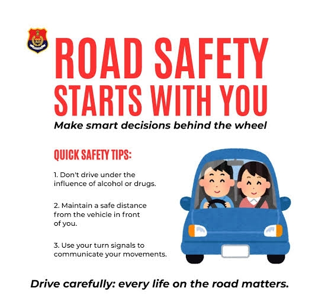

Introduction
Urban Safety Drive is an initiative focused on creating safer roads, public spaces, and communities in cities. With the rapid growth of urban areas, traffic congestion, accidents, and safety risks have increased. This drive aims to spread awareness and encourage responsible behavior among citizens.
About Road Safety
Road safety is one of the most important responsibilities of every citizen. Increasing traffic and fast lifestyle have increased the number of accidents.
By following simple rules like wearing helmets, seat belts, and maintaining speed limits, we can reduce accidents significantly.
Awareness programs like Urban Safety Drive help people understand the importance of discipline and responsibility while driving.

Importance of Urban Safety
Urban safety is essential for protecting lives and ensuring smooth daily activities. Unsafe roads and careless behavior can lead to serious accidents. By following safety rules, we can:
- Save lives
- Prevent injuries
- Reduce traffic congestion
- Create a disciplined society
Key Safety Rules
Road safety is a shared responsibility. Whether you are a driver, a two-wheeler rider, or a pedestrian, following safety rules is essential to prevent accidents and ensure a smooth flow of traffic. Carelessness on the road can lead to serious consequences, while responsible behavior can save lives.
For Drivers
- Drivers hold a major responsibility in maintaining safety on the roads. A small mistake can lead to severe accidents, so every action must be taken with care and attention.
- Always Wear a Seatbelt.
A seatbelt acts as a life-saving device during accidents. It prevents severe injuries by keeping you secure in your seat and reducing the impact of sudden collisions.
Follow Speed Limits
- Speed limits are set according to road conditions, traffic density, and safety requirements. Driving within limits gives you better control and enough time to react in unexpected situations.
Avoid Mobile Phone Usage While Driving.
Using a mobile phone while driving divides your attention and increases the risk of accidents. Always focus fully on the road.
Never Drive Under the Influence of Alcohol
Alcohol affects your thinking ability, reaction time, and coordination. Driving under its influence is extremely dangerous and strictly prohibited.
- Obey Traffic Signals and Signs
Traffic rules are designed to maintain order and prevent chaos. Following signals and signs ensures smooth movement and reduces accident risks.
- Maintain Safe Distance.
Keeping a safe distance from the vehicle ahead helps avoid collisions, especially during sudden braking or heavy traffic.
For Two-Wheeler Riders
- Two-wheeler riders are more vulnerable compared to car drivers, so they must follow safety precautions strictly.
- Always Wear a Helmet.
A helmet is the most important protective gear for riders. It significantly reduces the risk of head injuries and increases survival chances in accidents.
- Use Indicators While Turning
Indicators help communicate your direction to other road users, preventing confusion and possible crashes.
-
Riding at high speed reduces control over the vehicle and increases the severity of accidents. Always ride at a safe and manageable speed.
- Maintain Safe Distance.
Keeping proper distance from other vehicles allows enough reaction time and prevents sudden collisions.
- Follow Traffic Rules Strictly
Riders must follow all traffic signals, lane rules, and road signs to ensure their safety and that of others.
For Pedestrians
- Pedestrians are the most vulnerable road users, so they must stay alert and follow safety practices at all times.
Use Zebra Crossings
- Zebra crossings are designed for safe road crossing. Always use them instead of crossing randomly.
- Follow Traffic Signals
Wait for the correct signal before crossing the road. Crossing during the wrong signal can be extremely dangerous.
- Walk on Footpaths. Footpaths are meant for pedestrians. Walking on the road increases the risk of accidents.
- Stay Alert and Avoid Distractions
Avoid using mobile phones or wearing headphones while crossing roads. Being alert helps you notice approaching vehicles and react quickly.